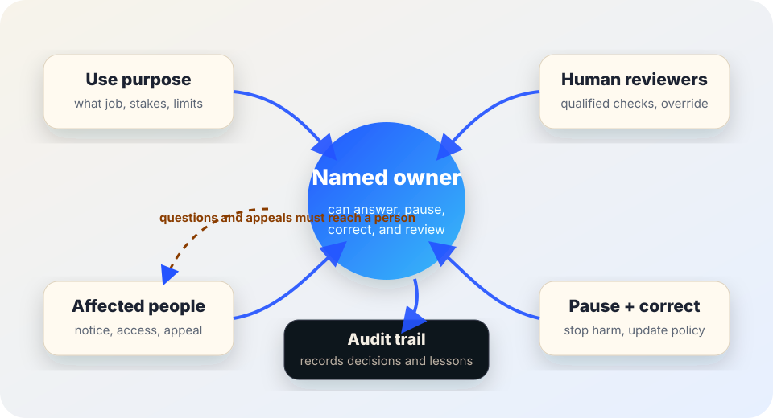

AI governance
AI system owner checklist.
Use this before an AI tool becomes a routine workflow, policy, classroom practice, public-service step, or vendor-managed decision aid.
The short answer
Every AI workflow needs a named owner who can answer four practical questions: What is this system allowed to do, who reviews it, who can pause it, and how are affected people heard when something goes wrong?
Ownership is not a ceremonial title. The owner must have enough authority, time, records, and organizational support to monitor the workflow, respond to incidents, connect people to appeal paths, and make corrections stick.

Why ownership matters
The NIST AI Risk Management Framework describes AI risk management through govern, map, measure, and manage functions. That work needs clear accountability: someone has to know the use case, understand the limits, decide what evidence is enough, and act when monitoring, complaints, or incidents reveal a problem.
NIST’s Generative AI Profile emphasizes governance, documentation, monitoring, human oversight, incident response, and risk management for generative AI. The European Commission’s AI Act overview describes obligations for some higher-risk systems including risk management, human oversight, transparency, accuracy, and record keeping. The UK Information Commissioner’s Office guidance emphasizes accountability, governance, and data protection principles for AI uses that involve personal data.
Use this checklist as public-interest guidance, not legal advice. Duties vary by jurisdiction, sector, contract, public-records law, labor rules, civil-rights law, disability access requirements, privacy law, and whether the AI workflow is high-risk.
The five names every AI workflow needs
1. Workflow owner
The person accountable for why the AI is used, what it may influence, what evidence supports it, and when it must be reviewed or stopped.
2. Human reviewer
The person or role qualified to check outputs before they affect people. They need authority to reject, revise, or escalate the AI-assisted result.
3. Incident lead
The person who coordinates pause decisions, fact checks, notices, fixes, and follow-up when harm, near misses, complaints, or failures appear.
4. Data/access steward
The person who controls what data enters the system, what records are retained, who can access them, and what should not be collected.
5. Affected-person contact
The path a student, worker, resident, customer, patient, applicant, parent, or community member can use to ask questions, request review, or appeal.
6. Backup owner
The role that takes responsibility when the owner is absent, leaves, changes jobs, or when a vendor or model update happens during a handoff.
Owner decision table
| Question | Minimum answer | Why it matters |
|---|---|---|
| Purpose | What job is the AI workflow allowed to help with? | Prevents vague “efficiency” claims from expanding into new uses without review. |
| Stakes | Could it affect rights, access, safety, finances, education, employment, housing, health, legal status, or public benefits? | Higher-stakes uses need stronger evidence, review, notice, and appeal paths. |
| AI role | Is the output a draft, summary, translation, recommendation, score, flag, or decision support? | Makes clear whether AI is assisting a human or shaping an outcome. |
| Reviewer | Who checks the output, what are they qualified to check, and can they override it? | Human review is weak if the reviewer cannot change the result in practice. |
| Pause trigger | What evidence, complaint, error rate, vendor change, or incident requires pausing or narrowing use? | Teams need stop rules before pressure makes continuation the default. |
| Records | What audit trail proves the system was used, reviewed, corrected, and disclosed appropriately? | Ownership is not checkable without records that support review and appeal. |
| Appeal path | How can affected people reach a human and get a meaningful re-check? | People need a route that does not require understanding the technology first. |
Starter owner record
AI workflow owner: [role/name] owns the use of [tool/feature] for [specific purpose]. The AI output may be used as [draft/recommendation/summary/translation/etc.] and may not be used for [off-limits uses]. [reviewer role] must check [accuracy, fairness, accessibility, policy fit, source support, privacy] before the output affects people. [role/name] can pause or narrow use when [triggers] occur. Affected people can request review through [contact/path]. Records are kept in [audit-trail location] with [retention/access rules].
For high-stakes workflows, this starter record is only a beginning. Add legal, privacy, security, accessibility, labor, civil-rights, procurement, and affected-community review before deployment.
Pause authority must be explicit
- Name who can pause the AI workflow without waiting for a vendor, committee, or routine meeting.
- Define immediate pause triggers: credible harm report, inaccessible process, privacy leak, unexpected bias pattern, unsafe output, broken appeal path, unsupported factual claims, or major vendor/model change.
- Define partial pauses: narrowing eligible use cases, requiring extra human review, disabling an automated feature, or switching to a manual fallback.
- Require a restart decision: what evidence, correction, notice, and monitoring must exist before the workflow resumes?
- Protect reporters. Staff and affected people should be able to raise concerns without retaliation or being forced through the same AI workflow they are questioning.
Review ownership after changes
AI ownership should be reviewed whenever the workflow, vendor, model, data source, policy, audience, reviewer role, legal duty, or risk level changes. A tool that was low-stakes in one context can become high-stakes when it moves into screening, discipline, benefits, hiring, housing, health, safety, or legal workflows.
- Vendor change: new model, new terms, new data use, new feature, new retention default, or new integration.
- Workflow change: AI output moves from drafting to recommending, scoring, flagging, or deciding.
- People change: owner, reviewer, incident lead, or affected-person contact leaves or changes duties.
- Evidence change: monitoring, audit samples, complaints, or external research show a new failure pattern.
- Policy change: new law, procurement rule, accessibility requirement, collective bargaining obligation, or public-records requirement applies.
Questions for the named owner
- Can you explain the workflow in plain language without vendor jargon?
- Can you show the evidence that the AI use is accurate enough, fair enough, accessible enough, and useful enough for this context?
- Can a human reviewer override the AI-assisted result, and is that override respected in practice?
- Can affected people find a non-AI route to ask questions, get review, or appeal?
- Can you pause the workflow today if a credible harm report arrives?
- Can you show the audit trail without exposing unnecessary personal data, credentials, or private logs?
- Can you name the last time the workflow was reviewed after a model, vendor, policy, or process change?
Bad signs
- Warning: Everyone says “the vendor owns it,” but the vendor cannot answer for local policy, access, appeals, or harm repair.
- Warning: The named owner has responsibility without authority, budget, records, or time.
- Warning: Human review exists on paper, but reviewers are expected to accept the AI output unless they can prove it is wrong.
- Warning: People affected by the workflow have no clear contact, appeal path, language access, or disability-access route.
- Warning: No one knows whether a vendor or model update changed the workflow’s behavior.
Starter checklist
- □ Name the workflow owner and backup owner.
- □ Define the AI workflow’s allowed purpose and off-limits uses.
- □ Name the human reviewer and confirm they can override the AI output.
- □ Name who can pause, narrow, restart, and retire the workflow.
- □ Name the affected-person contact and appeal path.
- □ Link ownership to the audit trail, incident plan, disclosure notice, and accessibility review.
- □ Review ownership after vendor, model, data, policy, staffing, or workflow changes.
Sources and further reading
- NIST — AI Risk Management Framework.
- NIST — Artificial Intelligence Risk Management Framework (AI RMF 1.0).
- NIST — Artificial Intelligence Risk Management Framework: Generative Artificial Intelligence Profile (NIST AI 600-1).
- European Commission — AI Act overview.
- UK Information Commissioner’s Office — Guidance on AI and data protection.
- UK Information Commissioner’s Office — Accountability and governance guidance.